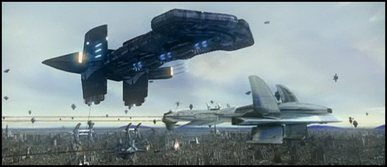
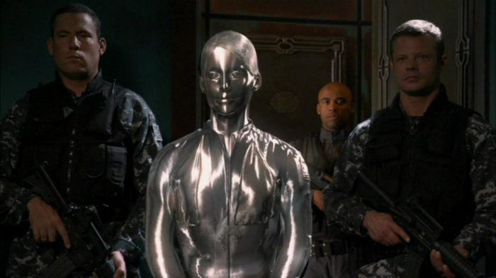
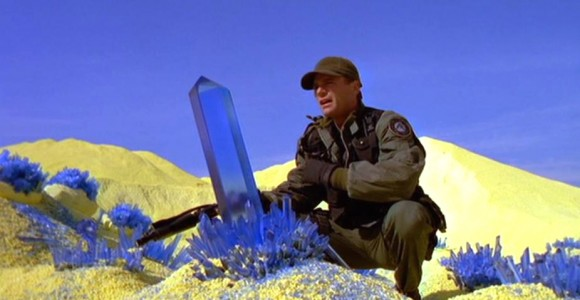

Aschen
 Aschen are a technologically advanced (much more so than humans) race, from a world designated P4C-970. Aschen are a rather unemotional people (described as a "race of accountants"), and can't tolerate loud noises which humans normally can. Typically, the Aschen will approach a prospective world, invite them into the Aschen Confederation, and provide that world with advanced medicines and technology; however, the Aschen then secretly target that world with a variety of covert means (including biological weapons), intended to severely reduce that planet's population and thus create a new farming world to use for the Aschen's benefit. In the Episode 2001[35] it is mentioned that the Volian homeworld was such a target; the Volians were formerly a prosperous technological civilization but reduced to little more than a few scattered farming communities. The Aschen also have the ability to turn a Jovian-type planet into a second sun to increase crop yields, and also possess a form of teleportation.
Aschen are a technologically advanced (much more so than humans) race, from a world designated P4C-970. Aschen are a rather unemotional people (described as a "race of accountants"), and can't tolerate loud noises which humans normally can. Typically, the Aschen will approach a prospective world, invite them into the Aschen Confederation, and provide that world with advanced medicines and technology; however, the Aschen then secretly target that world with a variety of covert means (including biological weapons), intended to severely reduce that planet's population and thus create a new farming world to use for the Aschen's benefit. In the Episode 2001[35] it is mentioned that the Volian homeworld was such a target; the Volians were formerly a prosperous technological civilization but reduced to little more than a few scattered farming communities. The Aschen also have the ability to turn a Jovian-type planet into a second sun to increase crop yields, and also possess a form of teleportation.
Asgard

A benevolent race that, according to the mythology of Stargate, gave rise to Norse mythology on Earth and inspired accounts of the Roswell Greys. The Asgard can no longer reproduce and therefore perpetuate themselves by transferring their minds into new cloned bodies. Extremely advanced technologically, the threat of their intervention shields many planets in the Milky Way from Goa'uld attack, including Earth.[36] They also provide much assistance to Earth in the way of technology, equipment, and expertise. Their main adversary in Stargate SG-1 are the mechanical Replicators, against which they enlist the aid of SG-1 on several occasions. The entire Asgard civilization chooses to self-destruct in "Unending", due to the degenerative effects of repeated cloning. A small rogue colony of Asgard, known as the Vanir, still exist in the Pegasus galaxy. They were able to slow cloning's negative side effects by experimenting on humans.
Asurans

Artificial life-forms composed of nanites, introduced in season 3 of Stargate Atlantis. They are similar to the human-form Replicators of Stargate SG-1 and so are called that in the show. The Asurans were created by the Ancients to combat the Wraith but were ultimately abandoned for being too dangerous. Extremely aggressive, the nanites thrived and built an advanced civilization. In season 4, Rodney McKay activates the Asurans' attack code, causing them to attack the Wraith, but this eventually comes to threaten all the inhabitants of Pegasus as the Asurans decide the best strategy is to starve the Wraith by eliminating all human life in the galaxy.
Crystalline species

Crystalline species: Beings that live in crystal-like shapes. They can leave their "bodies" to travel through electrical conductors and can enter the minds of humans through touch.